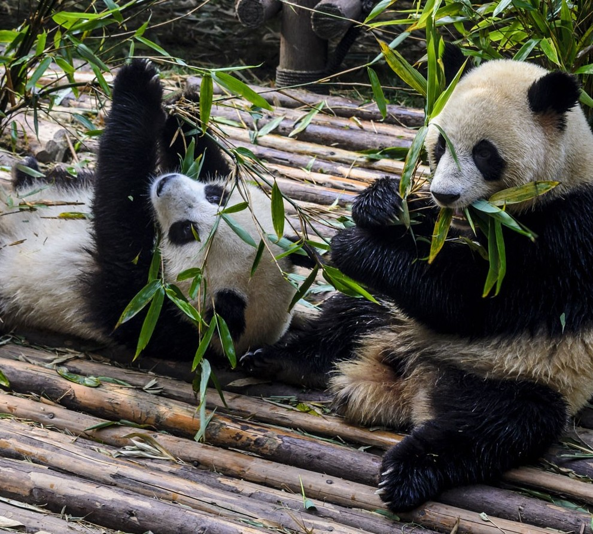
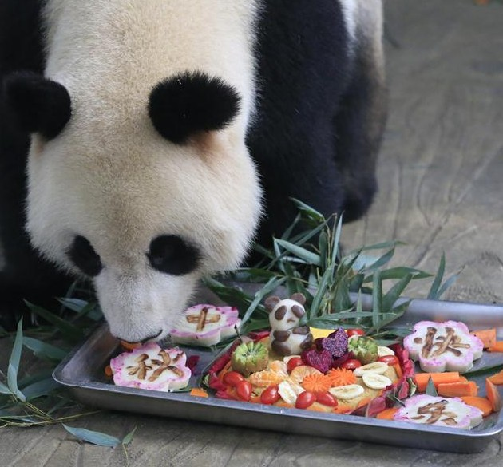
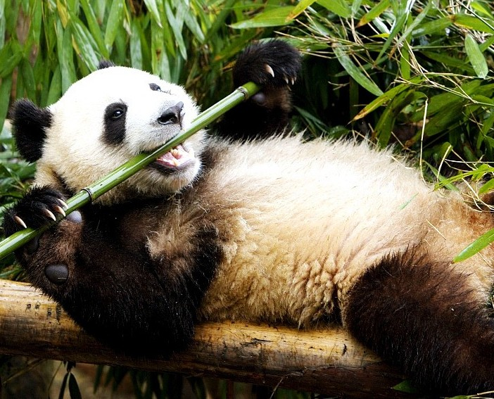

The Diet of Pandas
Daily Diet
A staggering 99% of the panda’s diet is bamboo. Occasionally, pandas will feed on other plants or small animals such as birds or fish, but they rarely eat them and mostly eat bamboo. Since bamboo is a very low calorie food, pandas will consume lots of it per day. A panda will consume up to 15 kilograms of bamboo leaves per day, while consuming an incredible 38 kilograms of bamboo shoots per day.
When Do Pandas Eat?
Eating Behavior
Pandas will generally spend most of their day eating alone. This is what makes them such carefree creatures. They usually spend up to 16 hours foraging and eating every single day. This eating goes on throughout the day and into the night. Due to how much they eat, pandas usually defecate around 40 times per day.
 |
 |
 |